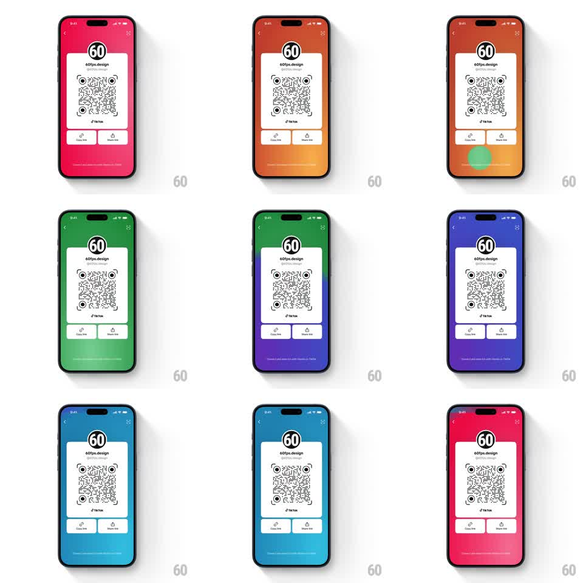

Media
Frame-by-frame

Rebuild this interaction 1:1: TikTok's QR share background - tapping anywhere on the gradient background behind the QR card sends a soft radial pulse from the tap point and shifts the whole background to the next color (pink-red, orange, green, blue-purple, teal).

Rebuild this interaction 1:1: TikTok's QR share background - tapping anywhere on the gradient background behind the QR card sends a soft radial pulse from the tap point and shifts the whole background to the next color (pink-red, orange, green, blue-purple, teal). ## Integration Integration: stack-agnostic spec - springs given as stiffness/damping, timed motions as duration + curve; map every value to your framework and animation library of choice. ## Scene Full-screen vertical gradient (top color -> bottom tint) behind a white QR card: app logo, "60fps.design", "@60fps.design" handle, the QR code with a TikTok logo, and "Copy link" / "Share link" buttons. A small footer line sits at the bottom. Taps land anywhere outside the card. ## Motion spec Pattern: tap-ripple gradient shift, ~700ms. - Pulse: on tap, a soft radial ring expands from the tap point (0 -> 1.5x screen width, 600ms, ease-out, opacity 0.35 -> 0) in the incoming color. - Shift: the background gradient crossfades to the next palette (600ms, ease-in-out), the change radiating outward from the tap point (slight delay ramp, ~80ms across the screen). - Cycle: palettes advance in a fixed order: magenta-red -> orange -> green -> indigo-purple -> teal -> back. - Card: the white QR card stays perfectly still; only the background moves. ## Calibration - The pulse origin is the exact tap coordinate - not screen center. - Rapid taps queue: each tap starts a new pulse over the in-flight transition. ## Reduced motion Background crossfades (300ms) with no radial pulse. ## Don't miss - The pulse is colored with the incoming palette, so the new color appears to spread from the finger. - The gradient is two-stop and vertical in every palette.